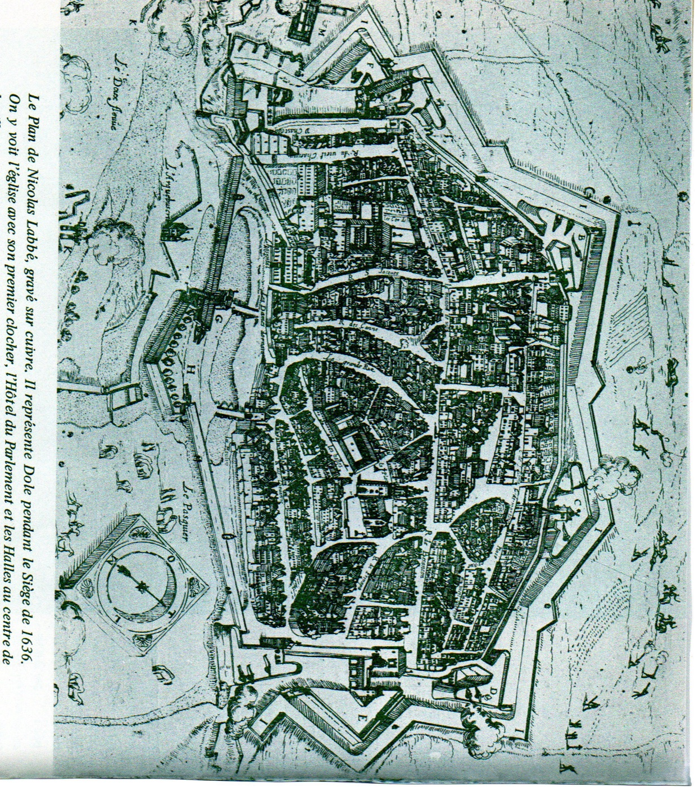
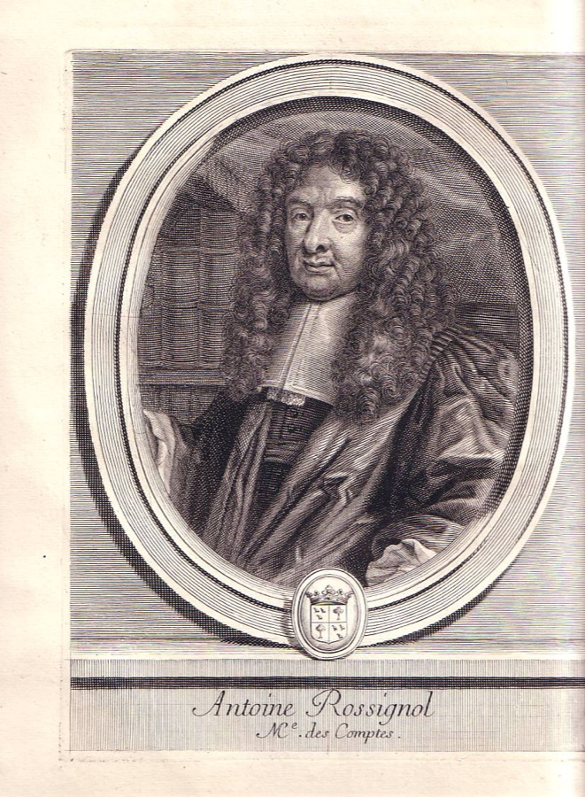

Dossier · Franche-Comté, the Ten Years’ War
Dole, 1636: the cipher Rossignol had read
For the eighty days of the siege of Dole, the capital of the County of Burgundy had only one way of talking to the army that was to relieve it: messengers slipping through the French lines, carrying letters in which the important words were written as numbers. In Paris, Antoine Rossignol, Richelieu’s codebreaker, read those numbers. The besieged eventually realised it and changed their cipher. Almost four centuries later, we retraced Rossignol’s steps from the letters received by one of the leaders of the relief army, Jean Girardot de Nozeroy.
“Our cipher is discovered: the enemy is using it; take care not to be caught by it.”
The Archbishop of Besançon and the Parlement to the Marquis of Conflans and Councillor Beauchemin, Dole, late July 1636 (draft in Antoine Brun’s hand; translated from the French: « Nostre chiffre est découvert : l’ennemi s’en sert ; gardés de vous y laisser surprendre. »).[5]
What is new, what was known
Known. The clear text of the ciphered passages has been in print since 1912. The Franc-Comtois historian Émile Longin published the drafts of these letters, preserved among Antoine Brun’s papers; the words Brun had underlined to be put into cipher appear there in square brackets.[1] The Rossignol episode is also known, from the letters of Richelieu and his ministers that Longin prints in the same volume.
New, to our knowledge. The key to the cipher is not printed anywhere. We rebuilt it from the letters as received, kept in Besançon, then checked it with a single measurement on a passage held back for that purpose. We then used it to read the passages that have no period decipherment, without knowing Longin’s edition. Compared with the printed text afterwards, our reading agrees on 96.7% of the letters. The dossier also shows what the cipher Rossignol broke actually looked like, and why he could break it “easily”.
1636: the war enters the County

In 1636 the County of Burgundy, the later Franche-Comté, belonged to Philip IV of Spain; it was governed from afar, from Brussels, by his brother the Cardinal-Infante. An old neutrality was supposed to protect it from its French neighbours. It did not survive open war between France and Spain: on 19 May 1635 a herald of Louis XIII declared war in Brussels.[1] A year later, on 27 May 1636, the army of the Prince of Condé, Henri II de Bourbon, appeared before Dole, capital of the province and seat of its Parlement.[1] It is the best-known episode of what Girardot de Nozeroy would call the “Ten Years’ War”, whose history he wrote for the years 1632 to 1642.[8][12]
Fifteen thousand men, the flower of the French infantry, invested the town. The grand master of the artillery, La Meilleraye, Richelieu’s cousin, directed the siege works; Gassion scoured the countryside with his horsemen.[1] Inside Dole, the defence rested on the old Archbishop of Besançon, Ferdinand de Rye, past eighty, on the mestre de camp Louis de la Verne, and on the magistrates of the Parlement; with the archbishop they formed the commis au gouvernement of the province who had stayed in the town, and their letters went out in the name of “the Archbishop of Besançon and the court”. Among these magistrates was the procureur général Antoine Brun, born in Dole in 1599, later Spain’s plenipotentiary at the congress of Münster.[1][12]
Outside, a relief army slowly gathered, with troops raised in the province, under the Marquis of Conflans, Gérard de Watteville, an old marshal. The Parlement attached to him one of its councillors, Jean Girardot de Nozeroy, lord of Beauchemin (c. 1580–1651), who would later write the history of this war.[1][12] The whole siege can be read in this exchange of letters: the besieged beg the army to come, and come quickly; Conflans and Girardot, who know their forces are too weak to storm the French lines, wait for imperial reinforcements. Longin, who has little patience with Brun’s impatience, sides with their caution.[1]
Writing out of a besieged town
Letters left Dole almost every week. Brun wrote them “to the sound of the cannon”, says Longin, while also enciphering and deciphering dispatches; one day a cannonball smashed the chimney of his study while he was briefing a messenger.[1] The correspondents used names from romances: Brun signed “Oronte”, Conflans was “Persée”. The sensitive passages, the hour of an attack, the signals, the places to burn, were written in cipher in the middle of the clear text. On the draft, Brun underlined the words to be enciphered; on the letter that left, they were written as numbers.[1]
The system worked surprisingly well. Of some thirty couriers, only three or four were taken by the French, writes Longin.[1] But three or four were enough. The intercepted letters went to Paris.
The letters Girardot received
Longin worked from the drafts kept among Brun’s papers. The letters as sent were kept by their recipient. Girardot de Nozeroy’s papers are in the Besançon municipal library (Ms 1591 to 1595); volume IV, shelfmark Ms 1594, contains among other things the letters he received in 1636. The printed catalogue of 1915 mentions only “ciphered passages” on fol. 106.[7][11] Going through the images of the volume, we found five ciphered pieces:
| Folio | Date | Senders | Cipher | State |
|---|---|---|---|---|
| fol. 127 | 7 June 1636 | the archbishop and the Parlement | “points” | recto deciphered in the margin at the time; one passage on the verso without decipherment |
| fols. 181 and 183 | 25 June 1636 | the commis au gouvernement | “points” | two ciphered copies of the same letter; period copy in clear on fol. 182 |
| fol. 191 | 1 July 1636 | Antoine Brun | “points” | fourteen passages, no period decipherment |
| fol. 200 | 22 July 1636 | the Parlement | “points” | two blocks, deciphered in the margin at the time |
| fol. 106 | 12 August 1636 | the Parlement | another cipher | deciphered in the margin at the time; not broken by us |
The first four pieces use the same cipher. The last, written three days before the siege was lifted, uses another. That change is at the heart of the story.
The “points” cipher
The principle is as simple as can be: each letter of the alphabet is replaced by a number, and the numbers are separated by points. Thus les is written 11.25.40. The letters u and v share a number, as do i and j; word divisions are not marked. Here is the key we rebuilt:
| letter | a | b | c | d | e | f | g | h | i, j | l | m | n | o | p |
|---|---|---|---|---|---|---|---|---|---|---|---|---|---|---|
| number | 35 | 31 | 29, 20 | 27 | 25 | 21 | 19 | 17 | 15 | 11 | 9 | 7 | 5 | 1 |
| letter | q | r | s | t | u, v | x | y | z |
|---|---|---|---|---|---|---|---|---|
| number | 36 | 38 | 40 | 42 | 44 | 50 | 52 | 54 |
The key has a visible structure. From a to p, the letters get odd numbers going down from 35 to 1; from q to z, even numbers going up from 36 to 54. Some numbers are missing from the sequence (33, 23, 13, 3, 46, 48): they may stand for rare letters such as k, or be nulls, but they do not occur in the passages we read. 20 is a second number for c, seen only once. The encipherer sometimes slips: he writes 45 for 40, or 31.5.7.31.25.40, bonbes, for bombes.[13]
Three passages, from numbers to text
For each passage: the numbers as we read them on the letter received, our reading (braces = probable word), then the text printed by Longin from Brun’s draft, and a translation.
The signals (Brun, 1 July 1636, fol. 191)
11 25 40 · 40 15 19 7 35 11 40 · 11 15 44 38 25 25 40
les signals {livrées}
Longin: « [les signals, livrées] », “the signals, the liveries”. The liveries are the recognition marks (colours, sashes) that would let the besieged tell friendly troops apart in the mêlée. Here the key can be followed letter by letter: 11 = l, 25 = e, 40 = s; then 40 = s, 15 = i, 19 = g, 7 = n, 35 = a, 11 = l, 40 = s.
The forge of Drambon (Brun, 1 July 1636, fol. 191)
27 25 42 38 44 15 40 25 7 42 35 1 11 35 15 7 11 35 21 5 38 19 25 27 25 27 38 35 9 31 5 7 25 42 35 44 42 38 25 40 5 44 40 25 21 5 7 42 11 25 40 31 5 7 31 25 40 36 44 5 7 7 5 44 40 15 25 42 42 25
détruisent a plain la {forge} de Drambon et autres ou se font les {bombes} qu’on nous iette
Longin: « [détruisent à plein la forge de Drambon et autres où se font les bombes qu’on nous jette] », “that they destroy outright the forge of Drambon and the others where the bombs thrown at us are made”.
Brun asks the garrison of Gray to burn the villages of Rigny, Talmay, Pontailler and Mirebeau, and above all to destroy the forges of Drambon, across the border, which made the projectiles fired at Dole. According to an account of the forges’ lessees cited by Longin, they had supplied 1,416 grenades and 5,301 cannonballs. On the night of 3 to 4 July, Captain Pierre de Perceval sacked the forges at the head of four hundred musketeers from Gray; on the 8th, Conflans and Girardot mentioned it in a letter to Dole.[2] We do not know whether the letter of 1 July set off the raid, but it was carried out within the week.
Twelve hundred men (the commis au gouvernement, 25 June 1636, fol. 183)
1 5 44 38 35 42 42 36 44 25 27 25 27 5 44 54 25 29 25 7 42 17 5 9 9 25 40
pour {attaque} de {douze} cent hommes
Period copy in clear, fol. 182: « pour attaque de douze cens hommes », “for an attack of twelve hundred men”. The encipherer skipped an a (attque). 54, the only example of z, had not been seen while the key was learnt: its value comes from this clear copy.
This letter of 25 June exists in three copies in the volume: two in cipher (fol. 181, whose right edge is lost, and fol. 183, complete) and one in clear (fol. 182). It was probably sent in duplicate, by two messengers, to improve its chances of getting through. The three witnesses agree: an independent check on the key.
How the key was recovered and checked
Recovering a key is easy when a decipherment sits next to the cipher. The hard part is proving that it is right, and not merely that it yields plausible text. We followed a procedure fixed in advance and recorded (SHA-256 fingerprint) before any measurement.[13]
- Learning. The letter of 22 July (fol. 200) contains two ciphered blocks, both deciphered in the margin by a contemporary hand. The first block, « Nous louons Dieu de la bonne et courageuse résolution que vous avez prise… » (“We praise God for the good and courageous resolution you have taken…”), has 177 numbers for the 177 letters of the gloss. The key was derived from it, then frozen.
- Check. The second block (341 numbers) was held back. One measurement, made after the key was frozen: 90.7% of the deciphered letters agree with the marginal gloss. To see what that figure is worth, we made the same measurement with 200 randomly shuffled keys: the best reaches only 22.9% (13.1% on average). The success thresholds had been set before the measurement: at least 85%, and at least 30 points above the best control.
- Reading. The unchanged key was then used to read the passages without a period decipherment: fourteen passages of Brun’s letter of 1 July and one passage on fol. 127v. Result, counted word by word under Daniel Bourdeau’s rule: 128 words, of which 113 certain, 11 probable and 4 unresolved (96.9% of words read).[14]
- Afterwards. Only when checking whether these letters had already been published did we find Longin’s edition. Compared with his text, our reading agrees on 96.7% of the letters (96.3% over all passages). This comparison was not part of the procedure: it confirms the reading, it does not replace the check.
The remaining differences are telling. Longin printed the drafts; Girardot received the letters as sent. The cipher writes par son altesse where the draft abbreviates par S. A., and the draft has two underlined words (de Mercy et de Forgats, accueillir) that we did not find in the cipher of fol. 191.
Rossignol before Dole

Antoine Rossignol was born in Albi, on 1 January 1600 according to his first biographer, Charles Perrault (other sources give 1589).[9][10] A mathematician, he made his name in the wars against the Huguenots: at the siege of Réalmont, in Languedoc, he deciphered on the spot a letter in which the besieged admitted they were short of powder; the Prince of Condé, the same man, sent them back their letter deciphered, and the town surrendered that very day. Perrault places the episode in 1626; Condé’s capture of Réalmont is usually dated April 1628.[9][10] Richelieu brought him to court, and Rossignol deciphered the letters intercepted during the siege of La Rochelle (1627–1628). He would serve Richelieu, then Mazarin and Louis XIV, for more than fifty years. Perrault, writing his eulogy in 1696, adds that he almost never met a cipher “that was impenetrable to him”, and that he kept “an inviolable silence” about his services.[9] People would later speak of a “black chamber”; in 1636, Richelieu’s cipher service was first of all this one man.
On 21 July 1636 Richelieu wrote to Condé: “I send you back the decipherment of the letters that those of Dole were writing to the Marquis of Conflans, from which you will see the state they are in.” He sent to the camp “the one who made the decipherment”, who had a proposal to make: thanks to what had been learnt, they might perhaps “catch the relief force and defeat it”.[3] The same day the secretary of state for war, Sublet de Noyers, introduced the bearer to the prince: “Sieur Rossignol himself, who is the most admirable decipherer in the world”. He brought his decipherment and the intercepted originals.[3] Rossignol stayed more than a week at the camp. The French camp was deciphering too: on 22 July, Condé sent to Paris copies of other letters taken from the enemy army and “deciphered” on the spot.[6]
Rossignol’s “stratagem” was the natural sequel to the break: once you can write in the besieged’s cipher, you can send them false letters. A forged letter, supposedly from the relief army, was handed to a peasant of Chissey by thirty French horsemen claiming to belong to that army; it fixed the day and place of a sortie, and on the appointed day French squadrons played the part of the relief army attacking the lines. The besieged did not come out. Brun had noticed that the paper bore the same mark as the Prince of Condé’s, that the numbers did not have their usual shape, and that everything was enciphered “down to the signature itself, which the correspondents had never done”. Girardot, for his part, notes that “the signatures were other than we were used to”.[4][8] On 4 August Condé sent Rossignol back to Richelieu: he had “omitted nothing […] to carry out his stratagem, tried twice”. La Meilleraye, the same day, put the failure down to the weakness of the besieged, who dared not risk their soldiers; Longin corrects him: it was the discovery of the trap that held them back.[6]
The episode illustrates a lesson cryptologists would often relearn: a broken cipher lets you read, but also forge. Here it was not the cipher that protected the besieged, but the outward signs of the letter: the paper, the hand, the correspondents’ habits.
Why this cipher could be broken
Longin writes that Rossignol “easily discovered the cipher”.[1] With the key in front of us, we can see why.
- One letter, one number. Each letter has a single equivalent (with one exception, 20). The frequencies of French pass straight into the cipher: a handful of numbers (those for e, u, s, o, n) keep coming back. Chancery ciphers of the period were often more elaborate: several signs for one frequent letter, codes for names and sensitive words (see for example the dossier Copenhagen, 1675).
- The points cut up the text. The reader knows exactly where each number begins and ends. There is no division to guess, which is often half the work.
- A key that can be guessed. The numbers follow the alphabet: odd and descending from a to p, even and ascending from q to z. Once two or three letters are found, the rest follows almost by arithmetic.
- Cipher inside clear text. The numbers sit within readable sentences. The context (“that the garrison of Gray…”) often announces the enciphered word: a place name, a number of soldiers, a day.
- The same key for everyone, for weeks. The archbishop, the Parlement, the commis and Brun all used this cipher, from June to late July at least. Each intercepted letter added material.
That is also why we could recover the key so quickly. But we had an advantage Rossignol lacked: the decipherments written in the margin by the recipients themselves.
August: a new cipher
In late July the besieged understood that their cipher was being read. Three successive letters warned Conflans and Girardot. The first: “Our cipher is discovered: the enemy is using it”. The second: “the enemy has found the key to our cipher, with which he thought to surprise us”. On 2 August the third, “for a third time”, reproached the relief army for having used the old cipher again in its last letter.[4][5]
Brun also answered with mockery. The same day he had a letter delivered to the French, apparently addressed to Conflans and made of a “strange jumble of letters, figures and bizarre signs” from which classical names emerge: Petronius, Philadelphus, Momus, Lucretia. The historian of the siege, Jean Boyvin, describes it as “figures put together at random, with no other purpose than to mock the decipherer and make him distil his brains”. The messenger, Boyvin adds, was “well received at the camp, paid and dismissed”, while the prince sweated “over untying this Gordian knot”.[5]
The real new cipher left at the same time. “I make good the loss of the cipher with the other one enclosed, which must be studied carefully down to the last strokes,” Brun wrote on 2 August to Jean Sordet, the Dole lawyer the court had given Girardot as secretary.[5] On 3 August he was already complaining: “As this cipher is awkward and takes a great deal of time, I cannot say many things.”[5] The new cipher has no points: it is a run of two-digit numbers, which Longin printed as they stand, with the comment: “My efforts to discover this cipher have been in vain.”[5]
The letter of 12 August kept by Girardot (fol. 106) is written in this system, or in one of the same form. Its clear text recalls that the enemy had had the key of the previous cipher. A contemporary hand noted in the margin the decipherment of the ciphered block: « que cette ville achève de se perdre sans aucun défaut de ceux qui sont dedans » (“that this town is finally being lost through no fault of those inside it”). We tried to break this cipher with the same procedure, learning on the first half of the block and checking on the second. It failed: 16.0% agreement, less than the best of 200 controls (28.0%). With 78 numbers for 63 letters of gloss, the block is too short, and the system is probably not a simple substitution: it must contain nulls, or numbers for syllables. On this point Longin and we are level. And probably Rossignol too: no source says he read the August cipher.[13]
15 August: the siege is lifted
The siege was decided far from Dole. In July the Cardinal-Infante’s army entered Picardy; La Capelle and Le Catelet fell, Corbie was invested, and panic reached Paris. The Spanish offensive was, in the Cardinal-Infante’s own words, a diversion meant to draw back the French troops besieging Dole.[1][8] On 1 August Baron Lamboy reached Gray with his imperial cavalry; ten days later the Duke of Lorraine followed. On 8 August Paris ordered most of the regiments to be sent to Picardy if the mine dug under the bastion of the Vieux-Château achieved nothing.[1] On the night of 14 to 15 August the French army withdrew from its lines. On the morning of the Assumption the forts were empty; Councillor Champvans went straight into the town, where the court welcomed him as its liberator.[8] Corbie capitulated, Longin notes, on the very day the people of Dole gave thanks for their deliverance.[1]
Antoine Brun would go on to negotiate for Philip IV at Münster; it was he who detached the United Provinces from the French alliance, by the treaty of 30 January 1648; Mazarin would call him a “great artisan of tricks and dissimulation”, which Longin takes as praise.[1] Girardot, retired from affairs, wrote his Histoire de dix ans, printed only in 1843. He says of the besieged what their letters also show: they wanted relief at once, when that would have meant, in his view, “risking everything and losing everything”.[8]
What this dossier adds
- The key to the “points” cipher of the Parlement of Dole and Antoine Brun in June–July 1636, rebuilt and validated by a single measurement (90.7% against 22.9% at best for 200 controls). To our knowledge it is printed nowhere; Longin published the text, not the key.
- The cipher itself, that is, what Rossignol had before him: the form of the numbers, the order of the key, the encipherer’s slips. It gives concrete meaning to Longin’s word, “easily”.
- A reading made from the numbers alone, checked afterwards against the printed text (96.7%), and a letter in three witnesses (fols. 181, 183, 182) showing that dispatches were sent in duplicate.
- A documented failure: the August cipher (fol. 106) remains closed, as it did for Longin in 1912.
The text of the letters, the existence of Rossignol’s decipherment, the forged letter and the change of cipher were known. This dossier brings them together around the letters as received, which had not been used.
What remains uncertain
- The numbers were read by a single reader, on the library’s images, which are not reproduced here. Probable words come from overwritten numbers, from a value seen only once, or from an encipherer’s slip.
- We do not know which letters Rossignol read, nor whether he rebuilt the whole key: the dispatches from Paris speak only of the “decipherment of the letters”. The cipher we describe is that of the letters Girardot received; it is very probably the one Rossignol broke, since the besieged replaced it as soon as they learnt of the leak.
- The dates are those of the letters received. Longin, who dated drafts that were often undated, sometimes proposes another (6 June for the letter of 7 June, 24 June for that of the 25th).
- The August cipher is not broken; the exact nature of its system remains unknown.
- We have not consulted Boyvin’s history of the siege (1637) or Jules Gauthier’s study of Brun (1902) directly; we cite them through Longin.
Notes and references
É. Longin (ed.), « Le siège de Dole par le prince de Condé (27 mai – 15 août 1636). Documents inédits », Mémoires et documents inédits pour servir à l’histoire de la Franche-Comté, published by the Académie des sciences, belles-lettres et arts de Besançon, vol. X, Besançon, 1912, introduction pp. IX–XXXIV (declaration of war of 1635 p. X; Condé’s army pp. XI–XII; Rossignol pp. XV–XVI; Brun pp. XVIII–XX; Conflans’s caution pp. XX–XXI; Picardy and the lifting of the siege pp. XXXII–XXXIV). archive.org ↗
Longin 1912, nos. LIV (pp. 89–90), CXXXII (pp. 190–191), CLXXVIII (pp. 249–251; notes on Drambon: village in the canton of Pontailler, account of the forges, Archives de la Côte-d’Or), CCXIX (Conflans and Girardot, Besançon, 8 July 1636, with a note on Perceval’s raid of the night of 3 to 4 July), CCLXXXVII (22 July, p. 405).
Longin 1912, no. CCLXXVIII (Richelieu to Condé, Paris, 21 July 1636, pp. 394–395, with Longin’s note on Rossignol), nos. CCLXXIX and CCLXXX (Sublet de Noyers to Condé, Paris, 21 July 1636, pp. 395–396).
Longin 1912, no. CCCXXXII (the archbishop and the court to Conflans and Beauchemin, Dole, 2 August 1636, pp. 473–474), with Longin’s note quoting Boyvin, Le siège de la ville de Dole, p. 252.
Longin 1912, nos. CCCXIII (late July 1636, pp. 443–444), CCCXXI (late July, pp. 458–459), CCCXXXIII (2 August, p. 475, quoting Boyvin p. 254), CCCXXXIV (Brun to Sordet, 2 August, pp. 476–478, with the note « Mes efforts pour découvrir ce chiffre sont demeurés vains »), CCCXXXVII (Brun to Sordet, 3 August, pp. 482–484).
Longin 1912, nos. CCLXXXV (Condé to Richelieu, camp before Dole, 22 July 1636, pp. 401–402), CCCXL (Condé to Richelieu, 4 August, pp. 486–487), CCCXLI (La Meilleraye to Richelieu, 4 August, p. 487, with Longin’s note).
Bibliothèque municipale de Besançon, Ms 1594 (papers of Girardot de Nozeroy, Ms 1591–1595, vol. IV), fols. 106, 127, 181–183, 191, 200; images consulted on Mémoire vive, not reproduced.
Jean Girardot de Nozeroy, Histoire de dix ans de la Franche-Comté de Bourgougne, 1632–1642, ed. J. Crestin, Besançon, 1843, p. 81 (Brun “had the ciphers”), pp. 119–120 (“tout hazarder et tout perdre”; the ciphers discovered and the signatures), pp. 125–130 (Picardy, French withdrawal, Champvans’s entry). archive.org ↗
Charles Perrault, Les Hommes illustres qui ont paru en France pendant ce siècle, vol. I, Paris, 1696, pp. 57–58, « Antoine Rossignol, maistre des comptes ». archive.org ↗
French Wikipedia, « Antoine Rossignol » (birth in 1589 according to the Mercure galant of December 1682) and « Réalmont » (capture of the town by Condé in April 1628), consulted 4 November 2026.
Catalogue général des manuscrits des bibliothèques publiques de France, vol. XLV (Besançon), 1915, entry for Ms 1594.
French Wikipedia, « Antoine Brun (diplomate) » (Dole, 29 June 1599 – The Hague, 2 January 1654) and « Jean Girardot de Nozeroy » (Salins, 1580 – 1651), consulted 4 November 2026; see also Longin 1912, pp. XVII–XX.
Protocol, key, measurements and readings: the record “The siege of Dole, 1636” on the Documents page (key, passages, count, method and limits). Research dossier of Brice Dudout, 4 November 2026.
Daniel Bourdeau, the “read by sense” rule (certain, probable, restored, unresolved) and catalogue of ciphers, cyphersolver repository ↗.